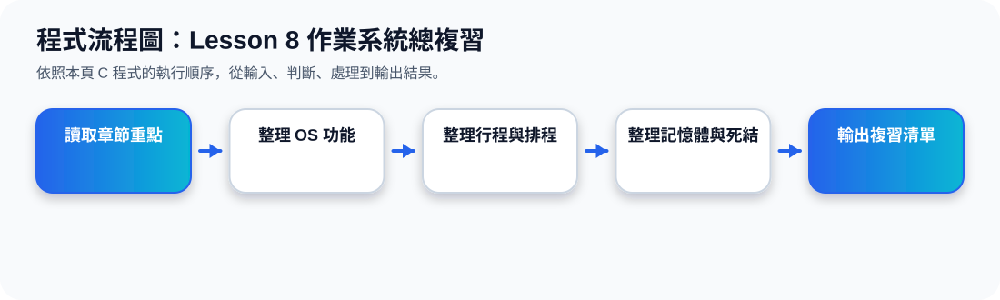

一、整章學習路線
Lesson 8 從哪裡開始、到哪裡結束？
二、五大核心區塊
1. OS 基本概念
作業系統負責執行程式、分配資源、控制硬體與提供使用者方便的操作環境。
2. 記憶體與儲存
從 main memory、secondary storage 到 paging、segmentation、virtual memory。
3. Process 管理
Process 是正在執行的程式，有 state、PCB、memory layout，也需要 scheduler 管理。
4. Scheduling
CPU scheduler 決定 ready queue 中哪個 process 先執行，常見方法有 FCFS、SJF、Priority、RR。
5. Threads 與 IPC
多執行緒提升回應速度與資源共享；IPC 讓不同 process 能透過 shared memory 或 message passing 溝通。
6. Deadlock
當 process 互相等待資源，可能形成 deadlock；可用 Resource-Allocation Graph 與四個必要條件理解。
三、考試快速記憶
容易混淆
Concurrency 不一定是真正同時執行；Parallelism 才是多核心上真正同時執行。Starvation 是長期拿不到資源；Deadlock 是互相等待而全部卡住。
最常考
Process state、Context Switch、CPU scheduling 演算法、Round-Robin time quantum、Deadlock 四條件、Resource-Allocation Graph。
四、Lesson 8 最後總結
Lesson 8 的核心可以用一句話理解：作業系統是一個資源管理者，它要讓 CPU、記憶體、I/O、檔案與多個使用者程式能公平、有效率且安全地一起運作。
從前面的 OS 定義開始，到最後 deadlock 必要條件，整章其實都在回答同一個問題：當很多程式同時想使用有限的電腦資源時，作業系統要如何安排、切換、保護與避免衝突。
程式流程圖與流程講解
程式流程圖：Lesson 8 作業系統總複習

流程講解
可編輯 C 程式範例與線上編輯器
可編輯 C 程式：Lesson 8 作業系統總複習
這段程式依照上方流程圖設計，包含中文註解，適合貼到線上編輯器直接執行與修改。
程式題目完整教學內容
程式題目完整教學：作業系統總複習
一、程式題目講解
用清單方式輸出 Lesson 8 的核心觀念，協助學生總整理。
重點是把 OS 中介角色、資源管理、行程狀態、CPU 排程與 Deadlock 條件整理成複習清單。
二、完整程式碼
以下程式碼可直接複製到 C 語言線上編譯器執行。程式中已加入中文註解，說明主要變數、判斷流程與輸出目的。
#include <stdio.h>
/*
主題 20：作業系統總複習
功能：輸出 Lesson 8 的核心概念複習清單。
*/
int main(void) {
const char *review[] = {
"1. OS 是使用者、應用程式與硬體之間的中介者",
"2. OS 管理 CPU、記憶體、I/O 與檔案系統",
"3. Process 有 New、Ready、Running、Waiting、Terminated",
"4. CPU Scheduling 影響等待時間與系統效率",
"5. Deadlock 需要注意四個必要條件"
};
int i;
for (i = 0; i < 5; i++) {
printf("%s\n", review[i]);
}
return 0;
}三、程式執行結果
1. OS 是使用者、應用程式與硬體之間的中介者
2. OS 管理 CPU、記憶體、I/O 與檔案系統
3. Process 有 New、Ready、Running、Waiting、Terminated
4. CPU Scheduling 影響等待時間與系統效率
5. Deadlock 需要注意四個必要條件結果說明：重點是把 OS 中介角色、資源管理、行程狀態、CPU 排程與 Deadlock 條件整理成複習清單。 程式依照設定的資料與控制流程逐步輸出，因此可以從結果看到每個步驟的執行順序與狀態變化。
四、程式流程圖與流程圖說明
本頁上方已提供對應的程式流程圖，圖中以「開始、資料設定、條件判斷、重複處理、輸出結果、結束」呈現程式執行順序。
程式先建立 review 字串陣列，再用 for 迴圈逐行輸出五個複習重點。
五、重要函數與語法說明
const char *review[] 儲存多行複習文字；for 迴圈逐筆輸出；printf() 顯示每個核心概念。
六、整體說明
本題的學習重點是把作業系統概念轉成可觀察的 C 程式流程。學生應先理解題目概念，再對照程式碼、流程圖與執行結果，掌握變數設定、條件判斷、迴圈處理與輸出結果之間的關係。